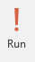
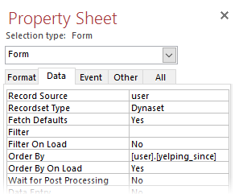
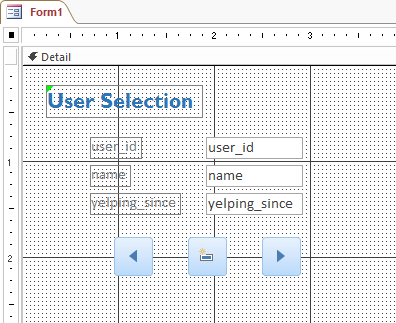

Access 2
Advanced Database Topics
Introduction
Requirements
You should already have attended the Access 1 class offered by STS or have equivalent experience. Specifically this class will require students to:
How to Get Access
To get Access on a Mac computer, you will need to buy it from the Microsoft website. You can buy a monthly subscription to the suite, or you can use your .edu email address to buy a 4-year subscription. However, if you have a Windows computer, you can download the entire suite of softwares for free from DoIT here.
Editing Relationships
To begin, we will review Access relationships and learn how to manipulate the various relationship rules that Access uses to keep data organized.
Referential Integrity
Referential Integrity is a system of rules that Access enforces to ensure that relationships between records in related tables are valid, and that you don’t accidentally delete or change related data. We strongly suggest using Referential Integrity with all relationships.
-
You cannot enter a value in any foreign key when the value does not exist somewhere in the related primary key.
-
You cannot modify a primary key value if that value appears in a foreign key.
-
You cannot delete a record if that record's primary key value appears in a foreign key.
Exercise: Testing Referential Integrity
In the following steps, we will test the rules of RI to better understand them. If everything goes as planned, we will have made no changes to our database after this exercise!
-
Open access2-classfile.accdb from the Class Files folder and take a second to look at what tables it contains. The database contains the same information as the one from Access 1, but a few tables have been added to increase the informational value of the database.
-
Let's see if we can enter a value in the business_id field of the hours table when that value does not exist in the business_id field of the business table.
-
Open the hours table by double-clicking on its name in the Objects panel.
-
In the Home tab of the Ribbon, in the Records section, click "New."
-
Enter values for both fields and press the Enter key on your keyboard.
Access will notify us that the record cannot be added.
-
Click "OK" and then press the Escape key to revert the record to its original state.
-
Now we will attempt to change a user_id value in user even though that value exists in the user_id field in the foreign table elite.
-
Open the user table and change any value in the user_id field.
-
Press Shift + Enter to attempt to finalize this change. Access will notify us that the record cannot be changed.
-
Click "OK" and then press the Escape key to revert the record to its original state.
-
Finally, let's try to delete a record in the primary table user even though its user_id value exists in the foreign key of elite.
-
Still in the user table, right-click on the grey box to the left of any record's user_id value.
-
Select "Delete Record." Access will notify us that the record cannot be deleted.
-
Click OK.
Exercise: Cascade Delete Related Records
Though Referential Integrity is useful to keep tables synchronized, there are times when you will want to change information For example: In 2015, Amy's Cafe was closed and reopened as a new restaurant called Mezze. Thus, we do not need Amy's Cafe in our database anymore.
We could delete the business record if we turned off Referential Integrity, but then we would need to delete every record that relates to the business by hand-- and Access can do this work for us if we turn on Cascade Delete Related Records.
-
Close out of all open tabs. To be sure we didn't change any records, don't save any of the tables.
-
Open Relationships from the Database Tools tab of the Ribbon.
-
Right-click on one of the lines connecting the business table to its three foreign tables and click "Edit Relationship."
-
In the Edit Relationship box that appears, check the box next to "Cascade Delete Related Records."
-
Repeat steps 3 and 4 for the reviews table and the categories table.
-
Re-open the business table, find the record for Amy's Cafe, and try again to delete it. (If you have trouble finding the record, sort the data by clicking on the drop-down arrow next to the business_name field header.)
Make sure you understand the warning that appears. You won't be able to undo this step!
-
Click Yes on the warning. All records in our entire database that referenced Amy's Cafe are now deleted.
-
Close out of all open Access objects, saving those that we have made changes to.
Queries
Now that we understand the rules governing our database's relationships, we can now use these relationships to create queries.
As their name implies, queries are questions that we ask about a database. Within Access, a query is an object (just like a table is an object) that can be saved, edited, and viewed as a spreadsheet.
Exercise: Your First Query
For our first example, we will write a query that will respond with an alphabetically-sorted list of the name, address, and star rating of every business in our database.
-
In the Create tab of the Ribbon, click Query Design. A new Query object will open in Design View.
-
In the Show Table box that appears, highlight business and click Add, then Close.
-
We will now put three fields into the Query-By-Example Grid below. In the business table that we just added to our query, double-click on business_name, full_address, and stars. The three fields will appear as columns in the QBE Grid.
Finally, to make our query result easier to navigate, we will sort the records alphabetically by the business_name field.
-
Click on the dropdown arrow in the business_name column's Sort value and choose "Ascending."

-
Our query is finished -- all we have to do is view it. In the Design tab of the Ribbon, click on the Run button.
Congrats on your first query! You should see an alphabetical list of businesses with their address and star information.
-
Right-click on the object tab for Query 1 and click Save. Give it a descriptive name such as "Business List" and click OK.
Now our query shows up as an object in our Access Objects panel, right underneath our tables. We can run this query at any time by double-clicking on its name in the Objects Panel.
Exercise: Advanced Querying
We will now create a query that extends across two tables. First, we will draw from the business and hours tables and use Criteria to determine a list of businesses that are open for brunch on Sundays.
-
Create a new query (click on Query Design in the Create tab).
-
Add the business table and the hours table by highlighting them and clicking Add, then click Close.
-
Add the following fields to the QBE Grid.
-
From business:
- From hours:
If we run the query now, Access will return a separate record for every day that a business is open. We must first limit our results to businesses that are open on Sundays.
-
Add the following to the Criteria cell in the day_of_week column in the QBE Grid: ="Sunday"
Your QBE grid should look like this:
-
Click Run. Your query should show a list of 134 businesses that are open on Sundays. Next, we will add two more criteria to limit our results to businesses that are open at 10am.
-
Click Design View to get back to the QBE Grid.
-
Add two more criteria:
- open: input <#10:00:00 AM# in the Criteria row.
- close: input >#10:00:00 AM# in the Criteria row.
-
Run the query. Now there should be only 25 rows, each showing a business that is open at 10:00 AM.
-
Congratulations, you're a query genius! Save this query as "Sunday Brunch" and close out of it. Later, we will use a Report to display this data in a more aesthetically pleasing way! Before that, though, we will take a look at Forms.
Forms
Forms allow us to quickly look over a record in a database. They can also speed up data entry and help to avoid mistakes. Today, we will create a form that can sift through the user table and add new user records.
Access Controls
These controls are used for forms in Access. They can be found on the Design tab of the Ribbon when a form object is open.
Exercise: Creating a Form
-
In the Create tab, click Form Design.
A new Form object will open in Design View. In the Design tab in the Controls section, there are multiple tools that we will use to add content to our form.
-
Select the Label control and click once near the top-left of the form section labeled "Detail."
-
In the label box that appears, type "User Selection" as the title for this form and press the Enter key.
-
Click on the Select control and use it to select the new label. You can move the label by clicking and dragging on its boundary or resize it by clicking and dragging on any of the boxes on the corners or sides of the label. If you want, you can also switch to the Format tab while and change its font, size, or color.
Now that we have a title for our form, we will add a textbox for each field in the user table. At first, these textboxes will only be able to show information about our user table.

-
On the right side of your screen is the Property Sheet. Make sure that "Form" is selected in the drop-down menu and click on the Data tab.
-
In the Data Properties, change Record Source to "user" and Order By to "[user].[yelping_since]".
-
Now we are ready to build our form. Move back to the Design Tab and click the Add Existing Fields button. The Property Sheet will change into a Field List.
-
Click and drag user_id, name, and yelping_since from the Field List to the form underneath the User Selection label we created. You can use the Select control to move them to a place that looks nice.
Each field is shown as two boxes: the left one is a label and the right one is a text box. Moving one element will move the other element an equal amount unless you click and drag it by the grey box on its top-left corner.
-
We're almost done! We will now create three buttons so that our form has an interface. Two of the buttons will move the user through the existing records in the user table, and the third button will allow the user to create a new record in the table.
-
In the Design tab of the ribbon, click on the Button control.
-
Click in a space beneath the three field boxes.
-
A Command Button Wizard will appear with two sets of options. Select "Record Navigation" in Categories and "Go To Next Record" in Actions, then click Finish.
A button will appear on the form.
-
Repeat steps 1 through 3 two more times with these changes in step 3:
-
Your form should now have three buttons. Move them with the Select control to put them in a more intuitive arrangement.

The form is complete! In the Design tab, switch to Form View and try viewing and editing the user table with your brand new form:
-
Sift through the user table one at a time with the right and left arrow buttons.
-
Change the value for all three fields and click the New Record button, then find that new record in the user table!
-
If you want, go back to the form's Design View and try adding different buttons to see what they do. Some good buttons to try are:
-
Record Navigation > Go To First / Go To Last
-
Record Operation > Delete Record
-
Application > Quit Application (Clicking this button will close out of Access!)
Save and close your Form object. You can open it again at any time, just like a table or query!
Reports
Reports are made to be printed. You can use reports when you want to send information as a PDF or paper document rather than sending an entire database. Today, we will create a report based on the second query we made today: what businesses are open for Sunday brunch?
Exercise: Building a Report
-
In the Create Tab, click on the Report Design button. A new Report object will open in Design View.
-
Your report should have a Page Header section, a Detail section, and a Page Footer section. Right-click anywhere on the report and click on "Report Header/Footer" to add two more sections.
The five sections of our report fill the following roles:
-
Report Header: shown at the beginning of the report
-
Page Header: shown at the beginning of every page
-
Detail: "body" of the report, will repeat over and over to fill the report's pages
-
Page Footer: shown at the end of every page
-
Report Footer: shown at the very end of the report
-
The Field List should still be open from before. Switch to the Property Sheet by clicking on the Property Sheet button in the Design tab.
-
In the Property Sheet, make sure that "Report" is selected in the drop-down box. In the Data tab of the Property Sheet, change the Record Source to the query we created about Sunday brunch locations.
-
In the Design tab of the Ribbon, click the "Add Existing Fields" button to re-open the Field List.
-
Click and drag the business_name, open, close, and stars fields from the Field List to the Detail section of your report.
We're ready to preview our report, but we'll come back to it soon.
-
Switch to Report View and scroll through the report.
We need to make a few small changes: first, we should add header and footer information, and second, we should cut out the blank spaces in between records. Finally, we will edit the placement and descriptions of our record values so that they are a bit easier to comprehend.
Exercise: Editing a Report
-
Switch back to Design View.
-
Each of the five sections of our report is resizeable. Make the Report Header a bit larger by clicking and dragging downward on its lower boundary.
-
Use the Label control to create a title, description, and byline for our report in the Report Header section. Remember that you can edit the text of a selected element by switching to the Format tab!
-
Use the Select control to make edits to the elements in the Detail section. Use the following as guidance, but feel free to make your own edits as you see fit!
-
Delete the label for business_name (the element on the left, not the text box to the right) by selecting it and pressing the Delete key on your keyboard.
-
Change the labels for open and close to be a bit more descriptive.
-
Rearrange all of the fields and labels to a configuration that you like.
-
Click and drag the bottom boundary of the Detail section upward so there is not so much blank space.
-
Keep making edits to your report until you are happy with how it looks! You may use the example below as a template, but you may be as creative as you wish. At any point, you can switch to Report View to preview how your report will look!
-
When you are finished making changes, make sure to save your report. You can now print your report by changing the View to Print Preview and clicking Print! You can also make a PDF from the Print Preview view by clicking on the "PDF or XPS" button in the Data section of the Ribbon. Congratulations on a well-designed Report!